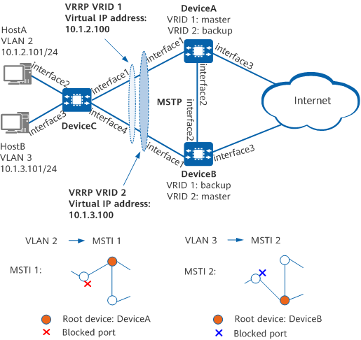

Example for Configuring MSTP+VRRP Networking
Networking Requirements
On the network shown in Figure 1, hosts access the Internet through DeviceC, which is uplinked to DeviceA and DeviceB through redundant links. However, these links cause a loop that may lead to broadcast storms and damage MAC address entries. It is therefore required that the loop be prevented while redundant links are available. In this way, if one uplink is disconnected, traffic can be switched to the other uplink for forwarding, and network bandwidth can be efficiently used.
MSTP can be deployed to prevent the loop. It blocks redundant links on the Layer 2 network and prunes the network into a tree topology. In addition, VRRP can be configured on DeviceA and DeviceB. HostA then uses DeviceA as the default gateway to access the Internet, and DeviceB functions as the backup gateway. Conversely, HostB uses DeviceB as the default gateway to access the Internet, and DeviceA functions as the backup gateway. This provides high reliability while ensuring traffic load balancing.

In this example, interface1 through interface4 represent 10GE0/0/1, 10GE0/0/2, 10GE0/0/3, and 10GE0/0/4, respectively.

Device |
Interface |
VLANIF Interface |
IP Address |
|---|---|---|---|
DeviceA |
interface1 and interface2 |
VLANIF2 |
10.1.2.102/24 |
interface1 and interface2 |
VLANIF3 |
10.1.3.102/24 |
|
interface3 |
VLANIF4 |
10.1.4.102/24 |
|
DeviceB |
interface1 and interface2 |
VLANIF2 |
10.1.2.103/24 |
interface1 and interface2 |
VLANIF3 |
10.1.3.103/24 |
|
interface3 |
VLANIF5 |
10.1.5.103/24 |
Configuration Roadmap
The configuration roadmap is as follows:
- Configure the Layer 2 forwarding function on the devices.
- Configure basic MSTP functions on the devices on the ring network, including:
Configure an MST region and create multiple MSTIs. Map VLAN 2 to MSTI 1 and map VLAN 3 to MSTI 2 to balance traffic.
Configure the root bridge and secondary root bridge for each MSTI in the MST region.
Configure an appropriate path cost for an interface in each MSTI so that the interface can be blocked.
Configure protection functions to protect devices or links. For example, configure root protection for the designated ports of the root bridge in each MSTI.
- Assign interface IP addresses and configure a routing protocol on each device to ensure network connectivity.
- Create VRRP groups 1 and 2 on DeviceA and DeviceB. In VRRP group 1, configure DeviceA as the master device and DeviceB as the backup device. In VRRP group 2, configure DeviceB as the master device and DeviceA as the backup device. This implements load balancing.
Procedure
- Configure the Layer 2 forwarding function on the devices on the ring network.
Create VLAN 2 and VLAN 3 on DeviceA, DeviceB, and DeviceC.
# Create VLAN 2 and VLAN 3 on DeviceA.
<HUAWEI> system-view [HUAWEI] sysname DeviceA [DeviceA] vlan batch 2 to 3
# Create VLAN 2 and VLAN 3 on DeviceB.
<HUAWEI> system-view [HUAWEI] sysname DeviceB [DeviceB] vlan batch 2 to 3
# Create VLAN 2 and VLAN 3 on DeviceC.
<HUAWEI> system-view [HUAWEI] sysname DeviceC [DeviceC] vlan batch 2 to 3
Add desired interfaces on the devices to the VLANs.
# Add 10GE0/0/1 on DeviceA to VLANs.
[DeviceA] interface 10ge0/0/1 [DeviceA-10GE0/0/1] portswitch [DeviceA-10GE0/0/1] port link-type trunk [DeviceA-10GE0/0/1] port trunk allow-pass vlan 2 to 3 [DeviceA-10GE0/0/1] quit
# Add 10GE0/0/2 on DeviceA to VLANs.
[DeviceA] interface 10ge0/0/2 [DeviceA-10GE0/0/2] portswitch [DeviceA-10GE0/0/2] port link-type trunk [DeviceA-10GE0/0/2] port trunk allow-pass vlan 2 to 3 [DeviceA-10GE0/0/2] quit
# Add 10GE0/0/1 on DeviceB to VLANs.
[DeviceB] interface 10ge0/0/1 [DeviceB-10GE0/0/1] portswitch [DeviceB-10GE0/0/1] port link-type trunk [DeviceB-10GE0/0/1] port trunk allow-pass vlan 2 to 3 [DeviceB-10GE0/0/1] quit
# Add 10GE0/0/2 on DeviceB to VLANs.
[DeviceB] interface 10ge0/0/2 [DeviceB-10GE0/0/2] portswitch [DeviceB-10GE0/0/2] port link-type trunk [DeviceB-10GE0/0/2] port trunk allow-pass vlan 2 to 3 [DeviceB-10GE0/0/2] quit
# Add 10GE0/0/1 on DeviceC to VLANs.
[DeviceC] interface 10ge0/0/1 [DeviceC-10GE0/0/1] portswitch [DeviceC-10GE0/0/1] port link-type trunk [DeviceC-10GE0/0/1] port trunk allow-pass vlan 2 to 3 [DeviceC-10GE0/0/1] quit
# Add 10GE0/0/2 on DeviceC to VLANs.
[DeviceC] interface 10ge0/0/2 [DeviceC-10GE0/0/2] portswitch [DeviceC-10GE0/0/2] port link-type access [DeviceC-10GE0/0/2] port default vlan 2 [DeviceC-10GE0/0/2] quit
# Add 10GE0/0/3 on DeviceC to VLANs.
[DeviceC] interface 10ge0/0/3 [DeviceC-10GE0/0/3] portswitch [DeviceC-10GE0/0/3] port link-type access [DeviceC-10GE0/0/3] port default vlan 3 [DeviceC-10GE0/0/3] quit
# Add 10GE0/0/4 on DeviceC to VLANs.
[DeviceC] interface 10ge0/0/4 [DeviceC-10GE0/0/4] portswitch [DeviceC-10GE0/0/4] port link-type trunk [DeviceC-10GE0/0/4] port trunk allow-pass vlan 2 to 3 [DeviceC-10GE0/0/4] quit
- Configure basic MSTP functions.
On DeviceA, DeviceB, and DeviceC, configure an MST region named RG1 and create MSTI 1 and MSTI 2.
# Configure an MST region on DeviceA.
[DeviceA] stp region-configuration [DeviceA-mst-region] region-name RG1 [DeviceA-mst-region] instance 1 vlan 2 [DeviceA-mst-region] instance 2 vlan 3 [DeviceA-mst-region] quit
# Configure an MST region on DeviceB.
[DeviceB] stp region-configuration [DeviceB-mst-region] region-name RG1 [DeviceB-mst-region] instance 1 vlan 2 [DeviceB-mst-region] instance 2 vlan 3 [DeviceB-mst-region] quit
# Configure an MST region on DeviceC.
[DeviceC] stp region-configuration [DeviceC-mst-region] region-name RG1 [DeviceC-mst-region] instance 1 vlan 2 [DeviceC-mst-region] instance 2 vlan 3 [DeviceC-mst-region] quit
In RG1, configure root bridges and secondary root bridges for MSTI1 and MSTI2.
Configure the root bridge and secondary root bridge for MSTI 1.
# Configure DeviceA as the root bridge of MSTI 1.
[DeviceA] stp instance 1 root primary
# Configure DeviceB as a secondary root bridge of MSTI 1.
[DeviceB] stp instance 1 root secondary
Configure the root bridge and secondary root bridge for MSTI 2.
# Configure DeviceB as the root bridge of MSTI 2.
[DeviceB] stp instance 2 root primary
# Configure DeviceA as the secondary root bridge of MSTI 2.
[DeviceA] stp instance 2 root secondary
Set the path costs of the interfaces to be blocked in MSTI 1 and MSTI 2 to be greater than the default value.
The path cost range varies depending on which standard is used to calculate the path cost. This example uses the Huawei legacy standard and requires a path cost of 20000 for the interfaces to be blocked in MSTI 1 and MSTI 2.
Devices on the same network must use the same standard to calculate the path costs of their interfaces.
# Configure DeviceA to use the Huawei legacy standard to calculate the path costs of the desired interfaces.
[DeviceA] stp pathcost-standard legacy
# Configure DeviceB to use the Huawei legacy standard to calculate the path costs of the desired interfaces.
[DeviceB] stp pathcost-standard legacy
# Configure DeviceC to use the Huawei legacy standard to calculate the path costs of the desired interfaces, and set the path cost of 10GE0/0/1 in MSTI 2 and 10GE0/0/4 in MSTI 1 to 20000.
[DeviceC] stp pathcost-standard legacy [DeviceC] interface 10ge0/0/1 [DeviceC-10GE0/0/1] stp instance 2 cost 20000 [DeviceC-10GE0/0/1] quit [DeviceC] interface 10ge0/0/4 [DeviceC-10GE0/0/4] stp instance 1 cost 20000 [DeviceC-10GE0/0/4] quit
Enable MSTP to eliminate the loop.
Enable MSTP globally on the devices.
# Enable MSTP on DeviceA.
[DeviceA] stp enable
# Enable MSTP on DeviceB.
[DeviceB] stp enable
# Enable MSTP on DeviceC.
[DeviceC] stp enable
Configure the interfaces connected to the hosts as edge ports.
# Configure 10GE0/0/2 and 10GE0/0/3 on DeviceC as edge ports.
[DeviceC] interface 10ge0/0/2 [DeviceC-10GE0/0/2] stp edged-port enable [DeviceC-10GE0/0/2] quit [DeviceC] interface 10ge0/0/3 [DeviceC-10GE0/0/3] stp edged-port enable [DeviceC-10GE0/0/3] quit
(Optional) Configure BPDU protection on DeviceC.
[DeviceC] stp bpdu-protection
Configure the interfaces connected to the network as edge ports.
# Configure 10GE0/0/3 on DeviceA as an edge port.
[DeviceA] interface 10ge0/0/3 [DeviceA-10GE0/0/3] stp edged-port enable [DeviceA-10GE0/0/3] quit
(Optional) Configure BPDU protection on DeviceA.
[DeviceA] stp bpdu-protection
# Configure 10GE0/0/3 on DeviceB as an edge port.
[DeviceB] interface 10ge0/0/3 [DeviceB-10GE0/0/3] stp edged-port enable [DeviceB-10GE0/0/3] quit
(Optional) Configure BPDU protection on DeviceB.
[DeviceB] stp bpdu-protection
If an STP-enabled network device is connected to an edge port and BPDU protection is enabled, the edge port is shut down when it receives a BPDU, but its edge port attribute remains unchanged.
- Configure protection functions. For example, configure root protection for the designated ports of the root bridge in each MSTI.
# Enable root protection on 10GE0/0/1 of DeviceA.
[DeviceA] interface 10ge0/0/1 [DeviceA-10GE0/0/1] stp root-protection [DeviceA-10GE0/0/1] quit
# Enable root protection on 10GE0/0/1 of DeviceB.
[DeviceB] interface 10ge0/0/1 [DeviceB-10GE0/0/1] stp root-protection [DeviceB-10GE0/0/1] quit
- Verify the configuration.
After the preceding configurations are complete and the network becomes stable, perform the following operations to verify the configuration.
This example uses MSTI 1 and MSTI 2. As such, you do not need to check the interface status in MSTI 0.
# Run the display stp brief command on DeviceA to check the interface status and protection type. The displayed information is as follows:
[DeviceA] display stp brief MSTID Port Role STP State Protection 0 10GE0/0/1 DESI FORWARDING ROOT 0 10GE0/0/2 DESI FORWARDING NONE 1 10GE0/0/1 DESI FORWARDING ROOT 1 10GE0/0/2 DESI FORWARDING NONE 2 10GE0/0/1 DESI FORWARDING ROOT 2 10GE0/0/2 ROOT FORWARDING NONE
In MSTI 1, DeviceA is the root bridge; therefore, 10GE0/0/1 and 10GE0/0/2 on DeviceA become the designated ports. In MSTI 2, 10GE0/0/1 on DeviceA becomes the designated port and 10GE0/0/2 the root port.
# Run the display stp brief command on DeviceB. The displayed information is as follows:
[DeviceB] display stp brief MSTID Port Role STP State Protection 0 10GE0/0/1 DESI FORWARDING ROOT 0 10GE0/0/2 ROOT FORWARDING NONE 1 10GE0/0/1 DESI FORWARDING ROOT 1 10GE0/0/2 ROOT FORWARDING NONE 2 10GE0/0/1 DESI FORWARDING ROOT 2 10GE0/0/2 DESI FORWARDING NONE
In MSTI 2, DeviceB is the root bridge; therefore, 10GE0/0/1 and 10GE0/0/2 become the designated ports. In MSTI 1, 10GE0/0/1 on DeviceB becomes the designated port and 10GE0/0/2 the root port.
# Run the display stp interface brief command on DeviceC. The displayed information is as follows:
[DeviceC] display stp interface 10ge0/0/1 brief MSTID Port Role STP State Protection 0 10GE0/0/1 ROOT FORWARDING NONE 1 10GE0/0/1 ROOT FORWARDING NONE 2 10GE0/0/1 ALTE DISCARDING NONE
[DeviceC] display stp interface 10ge0/0/4 brief MSTID Port Role STP State Protection 0 10GE0/0/4 ALTE DISCARDING NONE 1 10GE0/0/4 ALTE DISCARDING NONE 2 10GE0/0/4 ROOT FORWARDING NONE
10GE0/0/1 on DeviceC is the root port in MSTI 1 and is blocked in MSTI 2. 10GE0/0/4 on DeviceC is blocked in MSTI 1 and is the root port in MSTI 2.
- Enable network connectivity between devices.
# Configure interface IP addresses. The following uses DeviceA as an example. The configuration of DeviceB is similar to the configuration of DeviceA. For details, see Configuration Scripts.
[DeviceA] vlan batch 4 [DeviceA] interface 10ge0/0/3 [DeviceA-10GE0/0/3] port link-type trunk [DeviceA-10GE0/0/3] port trunk allow-pass vlan 4 [DeviceA-10GE0/0/3] quit [DeviceA] interface vlanif 2 [DeviceA-Vlanif2] ip address 10.1.2.102 24 [DeviceA-Vlanif2] quit [DeviceA] interface vlanif 3 [DeviceA-Vlanif3] ip address 10.1.3.102 24 [DeviceA-Vlanif3] quit [DeviceA] interface vlanif 4 [DeviceA-Vlanif4] ip address 10.1.4.102 24 [DeviceA-Vlanif4] quit
# Configure OSPF on DeviceA and DeviceB. The following uses DeviceA as an example. The configuration of DeviceB is similar to the configuration of DeviceA. For details, see Configuration Scripts.
[DeviceA] ospf 1 [DeviceA-ospf-1] area 0 [DeviceA-ospf-1-area-0.0.0.0] network 10.1.2.0 0.0.0.255 [DeviceA-ospf-1-area-0.0.0.0] network 10.1.3.0 0.0.0.255 [DeviceA-ospf-1-area-0.0.0.0] network 10.1.4.0 0.0.0.255 [DeviceA-ospf-1-area-0.0.0.0] quit [DeviceA-ospf-1] quit
- Configure a VRRP group.
# Create VRRP group 1 on DeviceA and DeviceB, and set the VRRP priority to 120 and preemption delay to 20s on DeviceA, which then becomes the master device.
[DeviceA] interface vlanif 2 [DeviceA-Vlanif2] vrrp vrid 1 virtual-ip 10.1.2.100 [DeviceA-Vlanif2] vrrp vrid 1 priority 120 [DeviceA-Vlanif2] vrrp vrid 1 preempt timer delay 20 [DeviceA-Vlanif2] quit
# Use the default VRRP priority for DeviceB, which functions as the backup device.
[DeviceB] interface vlanif 2 [DeviceB-Vlanif2] vrrp vrid 1 virtual-ip 10.1.2.100 [DeviceB-Vlanif2] quit
# Create VRRP group 2 on DeviceA and DeviceB, and set the VRRP priority to 120 and preemption delay to 20s on DeviceB, which then becomes the master device.
[DeviceB] interface vlanif 3 [DeviceB-Vlanif3] vrrp vrid 2 virtual-ip 10.1.3.100 [DeviceB-Vlanif3] vrrp vrid 2 priority 120 [DeviceB-Vlanif3] vrrp vrid 2 preempt timer delay 20 [DeviceB-Vlanif3] quit
# Use the default VRRP priority for DeviceA, which functions as the backup device.
[DeviceA] interface vlanif 3 [DeviceA-Vlanif3] vrrp vrid 2 virtual-ip 10.1.3.100 [DeviceA-Vlanif3] quit
# Set the virtual IP address 10.1.2.100 of VRRP group 1 as the default gateway of HostA and the virtual IP address 10.1.3.100 of VRRP group 2 as the default gateway of HostB.
- Verify the configuration.
# After completing the preceding configurations, run the display vrrp command on DeviceA. The command output shows that DeviceA functions as the master device in VRRP group 1 and backup device in VRRP group 2.
[DeviceA] display vrrp Vlanif2 | Virtual Router 1 State : Master Virtual IP : 10.1.2.100 Master IP : 10.1.2.102 PriorityRun : 120 PriorityConfig : 120 MasterPriority : 120 Preempt : YES Delay Time : 20 s TimerRun : 1 s TimerConfig : 1 s Auth type : NONE Virtual MAC : 00e0-fc12-3456 Check TTL : YES Config type : normal-vrrp Backup-forward : disabled Create time : 2021-05-11 11:39:18 Last change time : 2021-05-26 11:38:58 Vlanif3 | Virtual Router 2 State : Backup Virtual IP : 10.1.3.100 Master IP : 10.1.3.103 PriorityRun : 100 PriorityConfig : 100 MasterPriority : 120 Preempt : YES Delay Time : 0 s TimerRun : 1 s TimerConfig : 1 s Auth type : NONE Virtual MAC : 00e0-fc12-3457 Check TTL : YES Config type : normal-vrrp Backup-forward : disabled Create time : 2021-05-11 11:40:18 Last change time : 2021-05-26 11:48:58# Run the display vrrp command on DeviceB. The command output shows that DeviceB functions as the backup device in VRRP group 1 and master device in VRRP group 2.
[DeviceB] display vrrp Vlanif2 | Virtual Router 1 State : Backup Virtual IP : 10.1.2.100 Master IP : 10.1.2.102 PriorityRun : 100 PriorityConfig : 100 MasterPriority : 120 Preempt : YES Delay Time : 0 s TimerRun : 1 s TimerConfig : 1 s Auth type : NONE Virtual MAC : 00e0-fc12-3456 Check TTL : YES Config type : normal-vrrp Backup-forward : disabled Create time : 2021-05-11 11:39:18 Last change time : 2021-05-26 11:38:58 Vlanif3 | Virtual Router 2 State : Master Virtual IP : 10.1.3.100 Master IP : 10.1.3.103 PriorityRun : 120 PriorityConfig : 120 MasterPriority : 120 Preempt : YES Delay Time : 20 s TimerRun : 1 s TimerConfig : 1 s Auth type : NONE Virtual MAC : 00e0-fc12-3457 Check TTL : YES Config type : normal-vrrp Backup-forward : disabled Create time : 2021-05-11 11:40:18 Last change time : 2021-05-26 11:48:58
Configuration Scripts
-
# sysname DeviceA # vlan batch 2 to 4 # stp instance 1 root primary stp instance 2 root secondary stp bpdu-protection stp pathcost-standard legacy # stp region-configuration region-name RG1 instance 1 vlan 2 instance 2 vlan 3 # interface Vlanif2 ip address 10.1.2.102 255.255.255.0 vrrp vrid 1 virtual-ip 10.1.2.100 vrrp vrid 1 priority 120 vrrp vrid 1 preempt timer delay 20 # interface Vlanif3 ip address 10.1.3.102 255.255.255.0 vrrp vrid 2 virtual-ip 10.1.3.100 # interface Vlanif4 ip address 10.1.4.102 255.255.255.0 # interface 10GE0/0/1 portswitch port link-type trunk port trunk allow-pass vlan 2 to 3 stp root-protection # interface 10GE0/0/2 portswitch port link-type trunk port trunk allow-pass vlan 2 to 3 # interface 10GE0/0/3 portswitch port link-type trunk port trunk allow-pass vlan 4 stp edged-port enable # ospf 1 area 0.0.0.0 network 10.1.2.0 0.0.0.255 network 10.1.3.0 0.0.0.255 network 10.1.4.0 0.0.0.255 # return
-
# sysname DeviceB # vlan batch 2 to 3 5 # stp instance 1 root secondary stp instance 2 root primary stp bpdu-protection stp pathcost-standard legacy # stp region-configuration region-name RG1 instance 1 vlan 2 instance 2 vlan 3 # interface Vlanif2 ip address 10.1.2.103 255.255.255.0 vrrp vrid 1 virtual-ip 10.1.2.100 # interface Vlanif3 ip address 10.1.3.103 255.255.255.0 vrrp vrid 2 virtual-ip 10.1.3.100 vrrp vrid 2 priority 120 vrrp vrid 2 preempt timer delay 20 # interface Vlanif5 ip address 10.1.5.103 255.255.255.0 # interface 10GE0/0/1 portswitch port link-type trunk port trunk allow-pass vlan 2 to 3 stp root-protection # interface 10GE0/0/2 portswitch port link-type trunk port trunk allow-pass vlan 2 to 3 # interface 10GE0/0/3 portswitch port link-type trunk port trunk allow-pass vlan 5 stp edged-port enable # ospf 1 area 0.0.0.0 network 10.1.2.0 0.0.0.255 network 10.1.3.0 0.0.0.255 network 10.1.5.0 0.0.0.255 # return
-
# sysname DeviceC # vlan batch 2 to 3 # stp bpdu-protection stp pathcost-standard legacy # stp region-configuration region-name RG1 instance 1 vlan 2 instance 2 vlan 3 # interface 10GE0/0/1 portswitch port link-type trunk port trunk allow-pass vlan 2 to 3 stp instance 2 cost 20000 # interface 10GE0/0/2 portswitch port link-type access port default vlan 2 stp edged-port enable # interface 10GE0/0/3 portswitch port link-type access port default vlan 3 stp edged-port enable # interface 10GE0/0/4 portswitch port link-type trunk port trunk allow-pass vlan 2 to 3 stp instance 1 cost 20000 # return